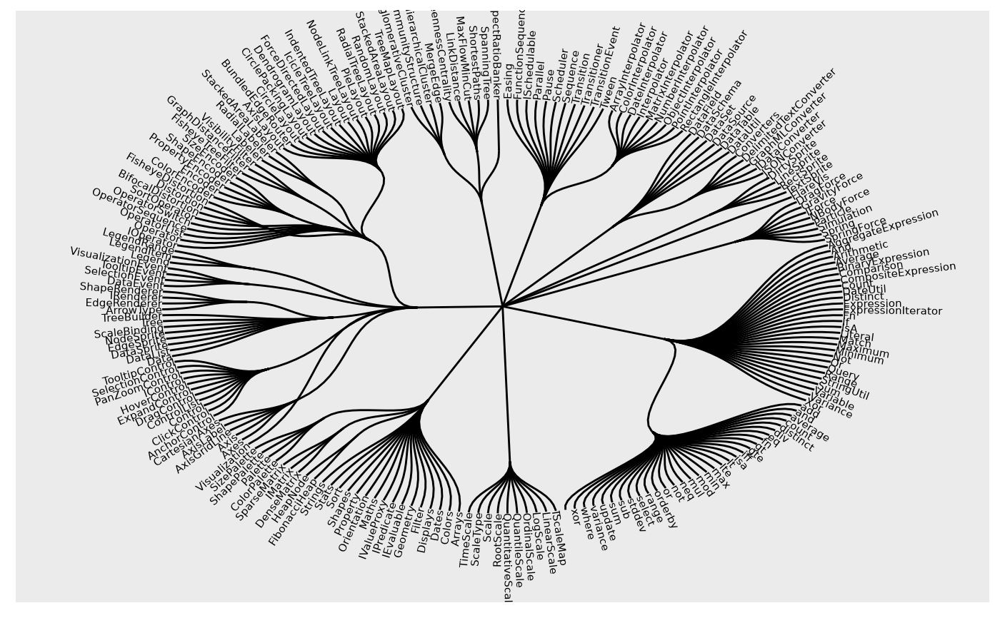

These helper functions makes it easy to calculate the angle associated with nodes and edges. For nodes the angle is defined as the angle of the vector pointing towards the node position, and is thus mainly suited for circular layouts where it can be used to calculate the angle of labels. For edges it is simply the angle of the vector describing the edge.
node_angle(x, y, degrees = TRUE) edge_angle(x, y, xend, yend, degrees = TRUE)
| x, y | A vector of positions |
|---|---|
| degrees | Logical. Should the angle be returned in degree ( |
| xend, yend | The end position of the edge |
A vector with the angle of each node/edge
require(tidygraph) flareGraph <- tbl_graph(flare$vertices, flare$edges) ggraph(flareGraph, 'dendrogram', circular = TRUE) + geom_edge_diagonal0() + geom_node_text(aes(filter = leaf, angle = node_angle(x, y), label = shortName), hjust = 'outward', size = 2 ) + expand_limits(x = c(-1.3, 1.3), y = c(-1.3, 1.3))